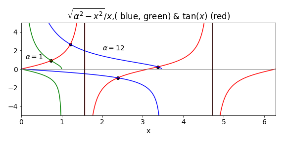
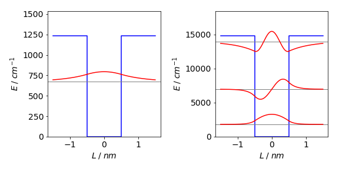
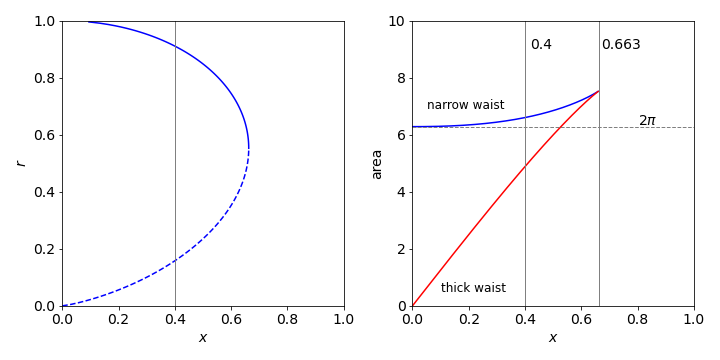
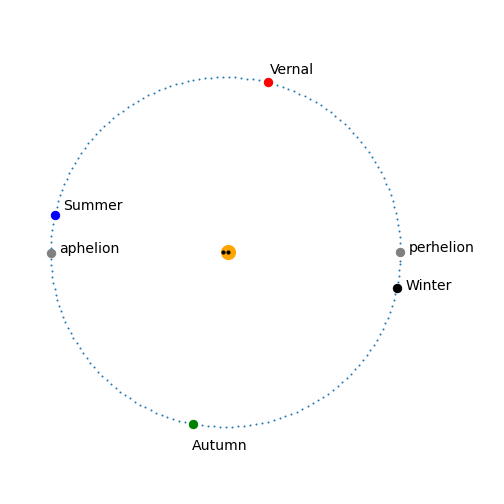

Solutions Q 74 - 85
Contents
Solutions Q 74 - 85#
# import all python add-ons etc that will be needed later on
%matplotlib inline
import numpy as np
import matplotlib.pyplot as plt
from sympy import *
init_printing() # allows printing of SymPy results in typeset maths format
plt.rcParams.update({'font.size': 14}) # set font size for plots
Q74 answer#
The equation is \(x^5-5=0\) and the derivative is \(f'(x)= 5x^4\). Using the algorithm below starting at \(x = 2\) produces \(1.3797\) which is accurate to four decimal places. The other four roots, making five in all, are complex (see Chapter 2).
Exercise: Write a general procedure to find any real \(n^{th}\) real root of a number \(m\) e.g. \(\sqrt[n]{m}\).
# for nth root of m let x^n - m = 0,
# If n and m are large, many iterations are needed
n = 5
m = 5
f = lambda x: x**n - m
df = lambda x: n*x**(n-1) # derivative
x = 2.0 # initial guess
for i in range(20): # Newton-Raphson, assume 20 iterations is plenty
xn = x - f(x)/df(x)
if abs(xn - x) < 1e-6: # set precision
print('root found',x)
break
x = xn
print('iteration',i,x)
iteration 0 1.6625
iteration 1 1.4609041406778989
iteration 2 1.3882630396058526
iteration 3 1.3798339245774864
iteration 4 1.3797296772166994
root found 1.3797296772166994
Q75 answer#
The function is \(f(x) = 3 - 8x^2 + x^4\) and the derivative \(f'(x) = -16x + 4x^3\). The Newton - Raphson algorithm produces one root, starting at \(x =3\), of \(2.7578\) and one of \(0.6280\) starting at \(x =1\). The roots are therefore \(\pm 2.7578\) and \(\pm 0.6280\) which are confirmed by plotting the graph, Fig. 23. SymPy produces the following exact results as integer constants are used. If real numbers were used, e.g. \(3.0\) or \(8.0\) the answers would be evaluated as floating point numbers.
x = symbols('x')
f01 = 3 - 8*x**2 + x**4
ans = solve(f01,x)
ans
ans[0].evalf() # get number as floating point
Q76 answer#
The derivative with respect to frequency is
which simplifies to \(\displaystyle \left(3- \frac{h\nu}{k_BT} \right)e^{h\nu /k_BT} -3 =0\).
To find the ratio of \(\nu /T\), substitute \(\displaystyle \frac{h\nu}{k_BT}=x\) into the solution and solve the resulting equation which is \(f(x)= (3-x)e^x-3\) using the Newton-Raphson method starting at \(x=3\) produces \(\displaystyle \frac{h\nu}{k_BT}=x=2.82144\). Therefore substituting for constants \(\displaystyle \frac{\nu}{T}=5.8787\cdot10^{10}\,\mathrm{ s^{-1}\,K^{-1}}\).
This result means that if you can measure the frequency or the wavelength of maximum intensity, the temperature can be estimated, but this would not be as accurate a result as fitting to the whole distribution curve. Pyrometers work on this principle.
Notice that by starting at \(x = 2\), the calculation will fail because the derivative \(f'(2) = 0\); starting at a value lower than \(x = 2\) produces a result that is effectively zero because the root \(f (0) = 0\) is found; therefore some care is needed when looking for roots.
Q77 answer#
The equation, after substitution \(\displaystyle x=\frac{hc}{\lambda_{max}k_BT}\) and rearranging, is \(x=5(1-e^{-x})\) or
with the derivative \(f'(x)=1-5e^{-x}\).
Starting at \(x = 4\) and using Newton-Raphson the result is \(x = 4.96511\) making \(\displaystyle \lambda_{max}T=\frac{hc}{4.96511k_B}\) which is the same result as given in Q65 but now calculated accurately.
Q78 answer#
(a) By differentiating \(f\) and substituting into the compliance, gives
which is constant and has a value of \(0.089\) at \(300\) K. Note that \(k_B=0.0138\) pN nm /K. The usual units are J/K but as J = N m these units are equivalent (\(10^{12}\,\mathrm{ pN \cdot10^9\, nm}\) = J): thermal energy \(k_BT = 4.14\) pN nm at \(300\) K.
(b) Because the compliance \(h\) is a constant,its derivative is zero and the equation to solve, called \(g\) so as not confuse this with the force, simplifies to
Adding values produce \(g(x_u) = -0.2415x_u + 2.67 \cdot 10^{-5}e^{36.23x_u}=0\). The derivative is \(\displaystyle g^{'}(x_u) - 0.2415x_u + 9.67\cdot10^{-4}e^{36.23x_u}=0 \).
The initial value of \(x_u\) has to be guessed; something larger than a bond length seems sensible, so try \(0.5\) nm to begin with. Using the code given in the text to locate the root of the equation, at least \(25\) iterations are necessary to converge to \(x_u = 0.208\) nm. Plotting the equation first, it is seen that the true value is about \(0.2\) nm and starting there far fewer iterations would be necessary.
Q79 answer#
The equation for material balance on species \(A\) is
and balancing charges is
where \(c_B\) is also the concentration of Na\(^+\) ions. The concentrations \(c_A\; c_B\) are the initial or total amounts present, the other values are those at equilibrium. Isolating \(\mathrm{HA, \; H_3O^+, \; OH^-}\) and letting \(x = \mathrm{[H_3O^+]}\) then substituting into the equilibrium equation for \(K_A\) gives
which can be rearranged to give the equation in the question.
(b) Using the values in the question, the equation to solve for \(x\) using the Newton - Raphson method is the cubic
and as we have no idea what the answer might be we solve numerically and the result is \(\mathrm{pH} = 4.7\). However, the acid and base concentrations are far larger than that of \(\mathrm{[H_3O^+]\; [OH^-]}\) and so some approximations can be made.
This produces \(\displaystyle K_A=x\left( \frac{c_B + x - K_w/x }{c_A - x + K_w/x }\right) \to x\frac{c_A}{c_B}\).
Rearranging leads to the Henderson-Hasselbalch equation; \(\mathrm{pH}=\mathrm{p}K_A - \log_{10}(c_A/c_B) \), which produces the same pH within \(1\)%.
Q80 answer#
The solution is \(0.1\) M ammonia solution with \(K_A= 10^{-9.25}\). Had the base constant been given instead we could convert as \(K_w=K_AK_B\) but we can start with the full equation given in the previous question. This can be solved using the Newton-Raphson method but is not needed in this case.
As ammonia is a base we may suppose \(c_a \approx 0\) then from equations in the previous question,
Additionally we can reasonably assume that \(\mathrm{[OH^-] \gg [H^+]}\) and so
substituting for \(K_B\) and \(\mathrm{[H^+]}\) and letting \(y=\mathrm{[OH^-]}\) gives \( y^2+K_By-c_bK_B=0\) which has a solution \(y = 1.8\cdot 10^{-3}\) and so \(p\text{H} = 11.25\).
As the concentration of base is often far greater than the \(\mathrm{[OH^-]}\) then we can further approximate to
rearranging produces \(\mathrm{[OH^-]} \approx \sqrt{K_bc_b}\). The \(p\text{H} = 11.25\), essentially the same as the accurate calculation.
Q81 answer#
The potential well has a depth of \(V_0hc\), which is \(2.44 \cdot 10^{-20}\) J. The constants conveniently make \(\alpha = 1.00\) in part (a) and \(12.0\) in part (b).
(a) The solution is found by the Newton - Raphson method with the function defined as \(\tan(\beta)-\sqrt{\alpha^2-\beta^2}/\beta\) for even parity levels and \(1/\tan(\beta)+\sqrt{\alpha^2-\beta^2}/\beta\) for odd parity. The derivatives can be worked out using the product rule or using tables. A code snippet of the Newton - Raphson algorithm is shown next
# Newton - Raphson
m = 9.10938e-31 # kg
hbar= 1.054572e-34 # J s
c = 2.997926e10 # cm /s
L = 0.5e-9 # m
V0 = 12*1230*2*np.pi*hbar*c # J
alpha = np.sqrt(2*m*V0*L**2/hbar**2)
f = lambda x: np.tan(x) - np.sqrt(alpha**2 - x**2)/x # even parity
df = lambda x: 1 + np.tan(x)**2 - np.sqrt(alpha**2 - x**2)/x**2 + 1/np.sqrt(alpha**2 - x**2)
x = 1.1 # initial guess, you will need to vary this for different solutions
for i in range(100): # assume 100 iterations is plenty
xn = x - f(x)/df(x)
if abs(xn - x) < 1e-6: # set precision
break
x = xn
print('{:s} {:f}'.format('beta = ',x) )
beta = 1.213135
The figure shows the functions and the crossing points for two the values of \(\alpha\). The even parity roots are found only on the positive branch of the tangent; the odd on the negative. There are no odd solutions less than \(\pi/2\) so the lowest value is always that for a even parity state.

Figure 58. \(\tan(x)\) and \(\sqrt{\alpha^2-x^2}/x\) and \(-x/\sqrt{\alpha^2-x^2}\). The point at which the curves cross produces value of \(\beta\) from which the energy levels are found. The even parity solutions are on the positive side. The black vertical line is at \(\pi/2\).
When \(\alpha =1\) the only root gives \(\beta = 0.739\). This means that only one bound energy level exists in the well with quantum number \(n = 1\). In fact at least one level is found even every well no matter how shallow. A level has its energy given by \(\beta^2 = 2m(E - V_0)L^2/\hbar ^2 = 2mEL^2/\hbar^2 + \alpha\). Substituting for the constants and \(\beta\) produces a value of \(671.7\,\mathrm{ cm^{-1}}\) above the bottom of the well. The deeper well has three solutions at \(1801, 6963\) and \(13976 \,\mathrm{ cm^{-1}}\). The next figure shows the energy levels and their wavefunctions. If a well of this width has a depth between approx \(3\) and \(10 V_0\) only two levels are present.

Figure 58a. The potential and their associated energy levels and wavefunctions. On the left the energy is \(-1230\,\mathrm{ cm^{-1}}\), on the right \(12\) times this value. The even-odd parity of the wavefunctions is clear.
The \(n^{th}\) energy level for an infinite well has energy
and the first is at \(3032 \,\mathrm{ cm^{-1}}\), over four times higher than the energy in our finite well. The finite height of the well clearly lowers the energy levels by a great amount and, because the wavefunction can spread into the classically forbidden region, effectively making the well wider and so lowering the energy levels.
Photon absorption by such a quantum well can only occur into the continuum energy region above the well top. The onset of absorption is in the infrared spectral region at approximately \(560\,\mathrm{ cm^{-1}}\).
(b) The deeper well (\(-12 V_0\)) has three levels at \(1801, 6963\) and \(13976\,\mathrm{ cm^{-1}}\). The corresponding infinite well energies are at \(3032, 12130\), and \(27293\,\mathrm{ cm^{-1}}\). The spectrum of the finite quantum well has two lines, corresponding to transitions from \(n = 1 \to 2\) at \(5161\) and from \(n = 2 \to 3\) at \(7013\,\mathrm{ cm^{-1}}\), then a continuous absorption starting at approximately \(784\,\mathrm{ cm^{-1}}\). The product of the symmetry of the wavefunctions and the transition moment limit transitions to those between odd-even levels only. The large energy gap between the first two levels means that at room temperature (\(k_BT \approx 210\,\mathrm{ cm^{-1}}\) ) hardly any population will be in the second level.
82 answer#
(a) The radius of the rings is fixed at unity as \(y = 1\). The constant \(r\) can found from the equation, \(1 = r \cosh(x/r)\) which is transcendental and cannot be solved for \(r\), other than numerically, but can be solved for \(x\) with \(r\) as the variable; the equation is \(x = r \cosh^{-1}(1/r)\). The plot of this function is shown in Fig. 59. The maximum \(x\) occurs when \(dx/dr = 0\). Using Sympy, the derivative is
r = symbols('r ')
diff(r*acosh(1/r),r)
this can be simplified to
The maximum is found when
which can be solved numerically using the Newton - Raphson method. After a few iterations the result \(r_0\) is 0.5524 with a maximum at \(x_0\) = 0.6627.

Figure 59. Left: Plot of \(r\) vs \(x\). The region of stable film formation \(r \gt \approx 0.55\) is shown as a solid line; the unstable region as dashed. The vertical line is at \(x = 0.4\). Right: The surface areas corresponding to the two values of \(r\) vs separation \(x\) and the area \(2\pi\) of a surface present on each of the rings separately and not in between them. The vertical line at \(0.663\) is the maximum value.
(b) The area of the soap film is the integral over all \(x\) values up to \(x_0\) and the curve rotated about the \(x\) axis to find the area:
where \(y'\equiv dy/dx = \sinh(x/r)\). The integral is
Using SymPy to do the integration gives
x, r = symbols('x r')
f = r*cosh(x/r)**2 # acosh is cosh^{-1}
ans = integrate(4*pi*f, (x,0,x) ) # integrate x from 0 to x
simplify(ans)
thus
but this solution is not as straightforward as it may seem because \(r\) depends on \(x\) and to obtain \(r\) the equation \(y = r \cosh(x/r)\) (where \(y = 1\) as given in the question) must be solved for \(r\) at each \(x\). This is clearly complicated, but can be done by again using the Newton - Raphson method starting with a small and then a large value of \(r\) to find the two solutions. The result is evaluated at \(x_0 = 0.4\), the value in the question. The plot on the right of fig 59 was made by solving for ranges of \(x_0\) between zero and its maximum value \(0.663\).
area = lambda r,x: 2*np.pi*r*(r/2*np.sinh(2*x/r)+x)
f = lambda r: r*np.cosh(x0/r) -1
df = lambda r: np.cosh(x0/r) - r*np.sinh(x0/r)/r**2 # derivative
x0 = 0.4
r = 0.2 # initial guess, you will need to vary this for different solutions
for i in range(100): # assume 100 iterations is plenty
rn = r - f(r)/df(r)
if abs(rn - r) < 1e-6: # set precision
break
r = rn
print('{:s}{:6.3f}{:s}{:6.3f}'.format('r = ',r,' area = ', area(r,x0) ) )
r = 0.158 area = 6.601
At \(x = 0.4\) the values of \(r\) are \(r = 0.158\) and \(0.910\) and using these values in the equation for the area gives \(2.10\pi\) and \(1.55\pi\).
The calculation shows that if the separation of the two rings is \(\pm 0.4\), with ring radius of \(1\), then the thick waist \(r = 0.910\) is the stable form of the soap bubble because its area is smallest and the surface tension is proportional to the area so the energy needed to form this film is less than that of the other one. The film with the narrower waist has the larger surface area; this will spontaneously form one of the other two surfaces because it is in a metastable state. To get directly to the film with the smallest surface area is going to be difficult in practice. The transition has to be made faster than the film on each ring can be formed. This will depend on the physical properties of the liquid film forming the bubble. If the separation of the rings is greater than approximately \(0.52\), the line previously of minimum area is now greater than 2\(\pi\) and the wide waist of the film will be unstable as it no longer has the minimum area and it will spontaneously burst.
Q83 answer#
(a) The derivatives are
Substituting and rearranging gives
which can be simplified a little to
and this can be made into an algorithm.
(b) The equation is \(x^9- 79=0\) and has a solution \(1.62498\) and the solution, for \(\displaystyle x-\left( \frac{11}{9971} \right)^{30/91}=0\) as below, \(0.1059378\).
f = lambda x: x**m - c # function
m = 91/30 # constants
c = 11/9971
x = 1 # initial guess
for i in range(100): # assume 100 iterations is plenty
xn = x - 2*x*f(x)/(2*m*x**m - (m-1)*f(x))
if abs(xn - x) < 1e-8: # set precision
break
x = xn
print('{:s} {:10.7f}'.format('x = ', x))
x = 0.1059378
Q84 answer#
The number of days lapsed after perihelion (3 Jan) and to the vernal equinox March 20, 2019 is \(t - t_0 = 31 + 29 + 20 - 3 = 77\). The method of using Halley’s recursion formula is similar to that for Newton - Raphson except that the second derivative has to be calculated.
# Halley's method for orbits
def Halley(x,f,df,ddf): # Halley's method
for i in range(100): # assume 100 iterations is plenty
xn = x - 2.0 *df(x)*f(x)/(2.0*df(x)**2 - ddf(x)*f(x))
if abs(xn - x) < 1e-10: # set precision
break
x = xn
return x
#--------------------
f = lambda x: x - eps*np.sin(x) - M # Kepler's equation
df = lambda x: 1 - eps*np.cos(x) # first deriv
ddf= lambda x: eps*np.sin(x) # second deriv
# constants calculate at day 80-3
n = 31+28+20 # 20 march 2019 Vernal equinox
M = (2.0*np.pi/365)*(n-3 ) # 365 days mean anomaly
eps = 0.01671 # earth eccentricity
a = 149.60e6 # semi major axis km
b = a*np.sqrt(1-eps**2)
foc = a*eps # focal position ; sqrt(a**2-b**2)
x = 5.5 # initial guess
x = Halley(x,f,df,ddf)
xpos = a*np.cos(x)
ypos = b*np.sin(x)
print('{:s} {:10.4g} {:10.4g}'.format('Vernal equinox (km)', xpos,ypos))
print('{:s} {:10.5g} '.format('Distance from sun (km)', np.sqrt((xpos-foc)**2+ypos**2)) )
Vernal equinox (km) 3.648e+07 1.451e+08
Distance from sun (km) 1.4899e+08
The table shows the position of the Earth in 2019 at the equinoxes and solstices.
The next figure shows the orbit and solstices and equinoxes, together with the foci of the elliptical orbit, black dots close to the centre and the sun as a slightly larger (orange) circle which is not to scale.

Figure 59a. The Earth’s orbit with the solstices and equinoxes. For clarity, the dots show the position of the Earth every second day. The eccentricity is very slight and the foci are barely distinguishable from one another on this scale being only \(\approx 5\) million kilometres apart.